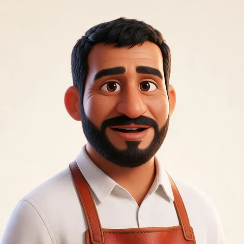
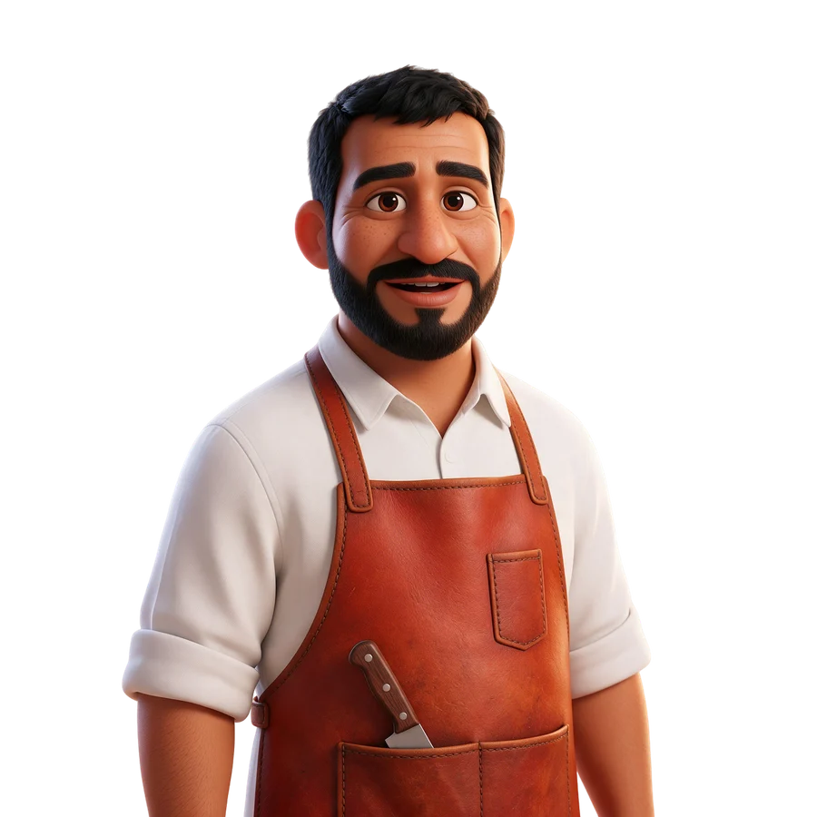

01

هلا! أنا الجزار 🔪 قل لي وش المناسبة وكم شخص…
حفلة مشاويعزومةذبيحةستيك
المستشار صار شخصيتين: الجزار من برّا يساعدك تختار القطعة والعدد والكمية، والشيف من جوّا يكمل معك شكل التقطيع والتتبيل والإضافات. الشخصية تحرّك شفايفها والنص يظهر حرفاً حرفاً — بدون صوت. هذا تصوّر الحركة حسب تفاعل العميل؛ قل لي «تمام» أو وش نعدّل.

اضغط أي خطوة: الشخصية المتكلمة تتقدم للأمام وتحرّك شفايفها مع ظهور النص، والثانية ترجع للخلف. عند التسليم ينزلق الجزار ويطلع الشيف.

الشخصيتان وتقسيم الأسئلة بينهما، التسليم من الجزار للشيف، حركة الشفايف مع ظهور النص حرفاً حرفاً، تبديل المتكلم في الترويسة، سطر التوفير، وتذكير الإضافات في الدفع.
مسرح أكبر للشخصيات فوق المحادثة (مثل العرض الحي أعلاه)، إيماءة الموافقة، «رشّة» التتبيلة، تلويحة الخمول، وإطلالة الشيف في صفحة الدفع.
إطاران فقط لكل شخصية (فم مغلق/مفتوح) بصيغة webp خفيفة. من يفضّل تقليل الحركة في جهازه يشوف النص مباشرة بدون حركة.